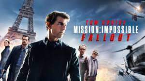

Ethan Hunt y el equipo del FMI unen fuerzas con el asesino de la CIA August Walker para evitar un desastre de proporciones épicas. El traficante de armas John Lark y un grupo de terroristas conocidos como los Apóstoles planean utilizar tres núcleos de plutonio para un ataque nuclear simultáneo contra el Vaticano, Jerusalén y La Meca, Arabia Saudita. Cuando las armas desaparecen, Ethan y su equipo se ven envueltos en una desesperada carrera contra el tiempo para evitar que caigan en las manos equivocadas.
Reparto
Fue aclamada como una de las mejores entregas de la saga. Destacando por su acción, dirección y actuaciones, especialmente la de Cruise, que realiza sus propias acrobacias.